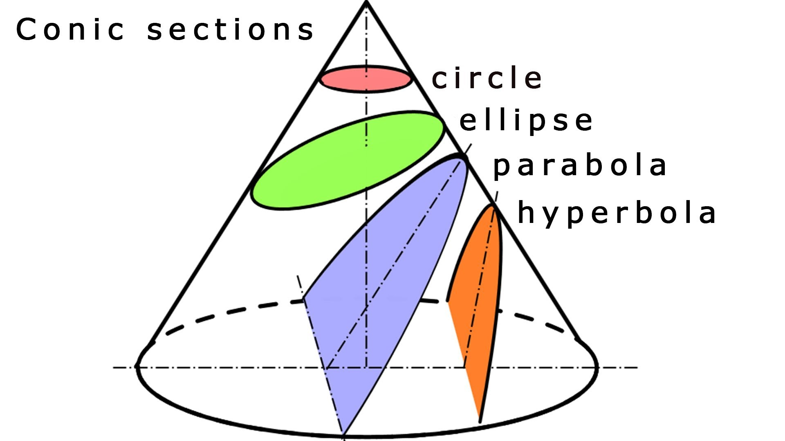

Insight into Orbital Mechanics: Celestial Body Simulation (Part 2)
0. Preface
This blog will serve as the mathematical groundwork for future implementations of my Three Body Problem project. In order to create an accurate simulation, one should have a deep understanding of the physics behind it. All of the mathematics used here were learned in my Engineering Mechanics class, derived and taught by Prof. Ken Kamrin.
1. Orbital Mechanics
Let's begin our exploration by considering a celestial body that is most familiar to us: the Earth. If we want to analyze the interaction between Earth, a very massive object, and a satellite, we assume that \( m \ll M_e \); in other words, the mass of the satellite is so much smaller than the mass of the Earth that its gravitational effect on Earth is negligible. We'll also assume that the center of mass of the Earth rests at the origin \((0, 0)\), and the position of the satellite is at some distance \(\mathbf{r}(t)\).
First, let's define our kinematics in Cartesian coordinates for a three-dimensional space:
Next, we define the gravitational force that the satellite feels from the Earth using Newton's Law of Universal Gravitation:
Where \( G \) is the gravitational constant, \( M_e \) is the mass of the Earth, and \( m \) is the mass of the satellite. The negative sign indicates that the force is attractive, directed towards the Earth.
For simplicity, let's define:
Applying Newton's second law, we sum the forces acting on the satellite:
Dividing both sides by \( m \), we obtain the equation of motion:
This is known as the trajectory equation. Since the gravitational force exerted by the satellite on Earth is negligible due to the mass difference, we omit it from our equation.
We can also express the gravitational force as the gradient of a potential energy function, which allows us to calculate quantities like escape velocity:\
Where the gravitational potential energy \( U_g \) is given by:
Using the work-energy theorem, we can derive the escape velocity—the minimum velocity needed for the satellite to escape Earth's gravitational field:
Where \( E_{\text{final}} = 0 \) because both kinetic and potential energies are zero at infinity. Setting \( E_{\text{initial}} = E_{\text{final}} \) and solving for \( v_e \), we find:
For Earth's surface, this gives an escape velocity of approximately \( 11,200\, \text{m/s} \).
However, the work-energy theorem alone does not provide information about the trajectory of the satellite since it deals with scalar quantities. To gain more insight into the orbital path, we can invoke the conservation of angular momentum:
Importantly, the position vector \( \mathbf{r} \) and the velocity vector \( \mathbf{v} \) lie in the same plane, meaning the motion is planar.
Let's express \( \mathbf{r} \) and \( \mathbf{v} \) in polar coordinates:
The angular momentum then becomes:
Since \( \mathbf{H} \) is conserved, we can write:
Which implies:
Next, we'll derive the orbit equation using conservation of energy and angular momentum. The total mechanical energy \( E \) is given by:
Substituting \( r\,\dot{\theta} = \dfrac{H_0}{m\,r} \), we get:
Rearranging terms, we can write:
By further manipulation and solving the resulting differential equation, we arrive at the orbit equation:
Where:
Trajectory parameter: \( P = \dfrac{H_0^2}{m^2 B} \)
Eccentricity: \( e = \sqrt{1 + \dfrac{2 E H_0^2}{m^3 B^2}} \)
Offset angle \( \phi \) is determined by initial conditions.
2. Orbital Geometry
The orbit equation defines conic sections—circle, ellipse, parabola, or hyperbola—based on the value of the eccentricity \( e \).

- When \( e = 0 \), the orbit is a circle.
- When \( 0 < e < 1 \), the orbit is an ellipse.
- When \( e = 1 \), the orbit is a parabola.
- When \( e > 1 \), the orbit is a hyperbola.
For elliptical orbits (which is the case for most planets and satellites), the closest point to the focus (Earth) is the periapsis \( r_p \), and the farthest point is the apoapsis \( r_a \). These are given by:
The eccentricity can also be expressed in terms of \( r_p \) and \( r_a \):
Understanding these parameters allows us to characterize the shape and size of the orbit.
Kepler's Laws
Johannes Kepler formulated three laws that describe planetary motion. Let's explore the second and third laws, which relate to our derivations.
Kepler's Second Law: Equal Areas in Equal Times
Kepler's second law states that a line segment joining a planet and the Sun sweeps out equal areas during equal intervals of time. This is a consequence of the conservation of angular momentum.
The area \( A \) swept out from time \( t_1 \) to \( t_2 \) is given by:
Kepler's Third Law: The Orbital Period
To find the total orbital period \( T \), we calculate the area of the entire ellipse and use the relationship from Kepler's second law.
Now if we set \(A_\text{slice} = A_\text{ecclipse}\) we can solve for the total time it takes to make a full orbit:
Where
This is Kepler's Thrid Law
Vis - Viva Equation
The vis-viva equation, also referred to as orbital-energy-invariance law, is one of the equations that model the motion of orbiting bodies. It is the direct result of the principle of conservation of mechanical energy which applies when the only force acting on an object is its own weight. - Wikipedia
Let's derive it:
Using Work-Energy:
So the total energy in any elliptical orbit is given only from the "max width" of the ellipse. Plugging this back into the energy balance and equating the energy at an arbritray point on the path:
Gives you the so called "Vis Viva Equation". So what is this equation used for? Well, it is very useful for orbital maneuvering because it tells you how the orbit changes with speed using only the value of the distance of the body from the focci (r), and the semi major axis (a). Neat huh...
Keep in mind though that this equation can only be used when the mass of the orbiting body is MUCH smaller than the body located at one of the focci.
In the End:
In this blog post, we have explored the fundamental principles of orbital mechanics, including Newton's law of universal gravitation, conservation of energy, and conservation of angular momentum. We derived the orbit equation, examined orbital geometry, discussed Kepler's laws, and introduced the Vis-Viva equation. These concepts form the mathematical foundation necessary for simulating celestial bodies and understanding their motions.